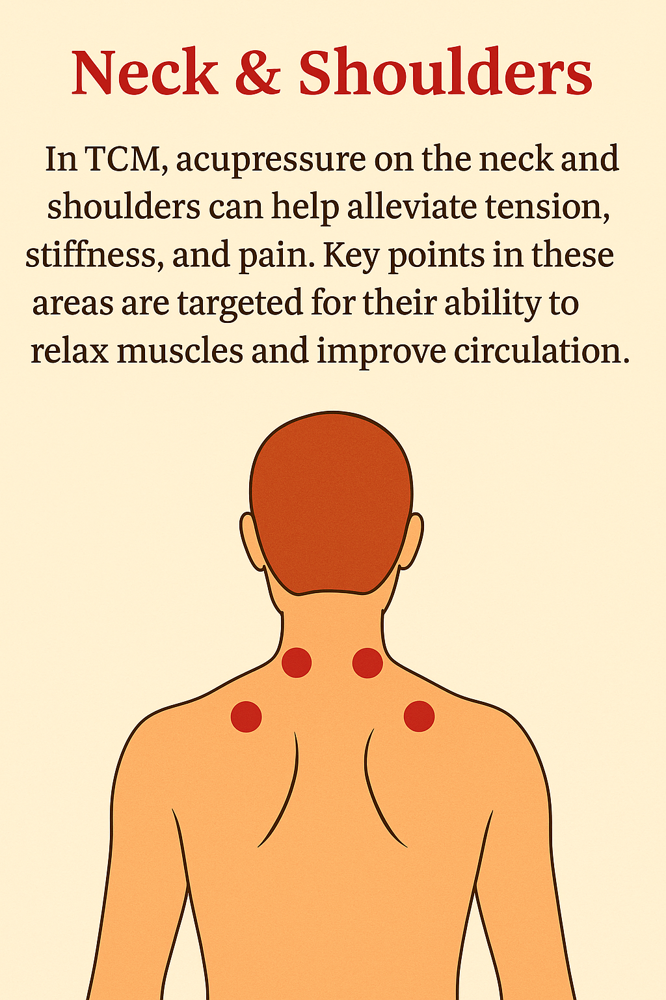

Pressure Points: Neck & Shoulders
Targeting pressure points in the neck and shoulders helps relieve tension, reduce headaches, and improve circulation. Common points include GB20 (Fengchi) at the base of the skull and LI16 (Jugu) at the shoulder tip.
